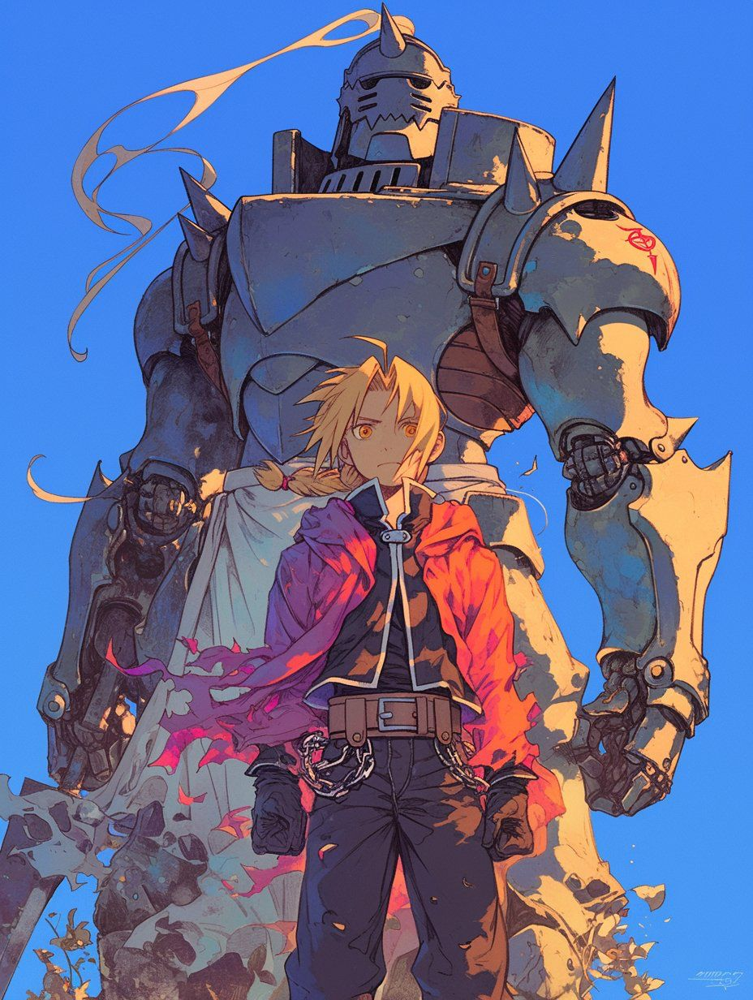

Anime & Kpop Era
Explore my journey into the worlds of anime and Kpop. Both obsessions have left lasting impressions on me!

Anime
My love for anime came from my dad. I grew up watching shows like *Sailor Moon* and *Pretty Cure*. There was a point
when I became so obsessed that I watched over 200 shows just to prove I was a “real fan.”
Eventually, I felt that many shows started having similar, generic storylines. My obsession comes back now and then when
I discover a show with a unique story that captivates me.
I moved on after attending an anime club meeting partnered with NC State. I quickly realized I was nothing compared to those hardcore fans.
Rating: 7/10. Still a soft spot in my heart, but not as intense as before.
Kpop
My Kpop journey started in middle school when I met a friend obsessed with a group called EXO. Later, another friend
introduced me to Stray Kids, and I became hooked. Kpop became a way for me to connect with people and form meaningful friendships.
I loved the community and the motivation it gave me for my art account. However, the money and time commitment required
to keep up with Kpop can be overwhelming. BTS going to the army also dampened some of my enthusiasm, as they were my first inspiration.
Despite this, Kpop has helped me make so many friends and find a connection with others who share the same passion.
Rating: 6/10. A fantastic community, but it can get expensive and time-consuming.